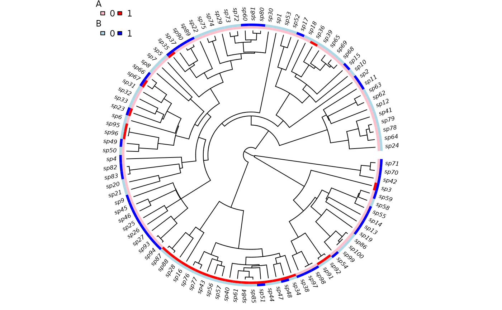
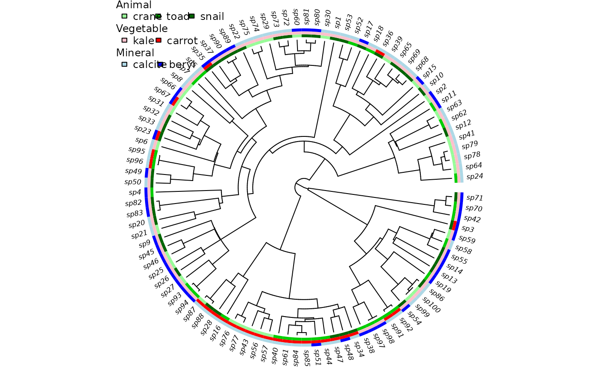

Plot a Phylogeny and Traits
trait.plot.RdPlot a phylogeny and label the tips with traits. This function is experimental, and may change soon. Currently it can handle discrete-valued traits and two basic tree shapes.
Arguments
- tree
Phylogenetic tree, in ape format.
- dat
A
data.frameof trait values. The row names must be the same names as the tree (tree$tip.label), and each column contains the states (0, 1, etc., orNA). The column names must give the trait names.- cols
A list with colors. Each element corresponds to a trait and must be named so that all names appear in
names(dat). Each of these elements is a vector of colors, with length matching the number of states for that trait. Traits will be plotted in the order given bycols.- lab
Alternative names for the legend (perhaps longer or more informative). Must be in the same order as
cols.- str
Strings used for the states in the legend. If
NULL(the default), the values indatare used.- class
A vector along
phy$tip.labelgiving a higher level classification (e.g., genus or family). No checking is done to ensure that such classifications are not polyphyletic.- type
Plot type (same as
typein?plot.phylo). Currently onlyf(fan) andp(rightwards phylogram) are implemented.- w
Width of the trait plot, as a fraction of the tree depth.
- legend
Logical: should a legend be plotted?
- cex.lab, font.lab
Font size and type for the tip labels.
- cex.legend
Font size for the legend.
- margin
How much space, relative to the total tree depth, should be reserved when plotting a higher level classification.
- check
When TRUE (by default), this will check that the classes specified by
classare monophyletic. If not, classes will be concatenated and a warning raised.- quiet
When TRUE (FALSE by default), this suppresses the warning caused by
check=TRUE.- ...
Additional arguments passed through to phylogeny plotting code (similar to
ape'splot.phylo).
Examples
## Due to a change in sample() behaviour in newer R it is necessary to
## use an older algorithm to replicate the previous examples
if (getRversion() >= "3.6.0") {
RNGkind(sample.kind = "Rounding")
}
#> Warning: non-uniform 'Rounding' sampler used
## These are the parameters: they are a single speciation and extinction
## rate, then 0->1 (trait A), 1->0 (A), 0->1 (B) and 1->0 (B).
colnames(musse.multitrait.translate(2, depth=0))
#> [1] "lambda0" "mu0" "qA01.0" "qA10.0" "qB01.0" "qB10.0"
## Simulate a tree where trait A changes slowly and B changes rapidly.
set.seed(1)
phy <- tree.musse.multitrait(c(.1, 0, .01, .01, .05, .05),
n.trait=2, depth=0, max.taxa=100,
x0=c(0,0))
## Here is the matrix of tip states (each row is a species, each column
## is a trait).
head(phy$tip.state)
#> A B
#> sp1 0 0
#> sp2 0 1
#> sp3 1 1
#> sp4 0 1
#> sp5 0 0
#> sp6 0 0
trait.plot(phy, phy$tip.state,
cols=list(A=c("pink", "red"), B=c("lightblue", "blue")))

nodes <- c("nd5", "nd4", "nd7", "nd11", "nd10", "nd8")
grp <- lapply(nodes, get.descendants, phy, tips.only=TRUE)
class <- rep(NA, 100)
for ( i in seq_along(grp) )
class[grp[[i]]] <- paste("group", LETTERS[i])
## Now, 'class' is a vector along phy$tip.label indicating which of six
## groups each species belongs.
## Plotting the phylogeny with these groups:
trait.plot(phy, phy$tip.state,
cols=list(A=c("pink", "red"), B=c("lightblue", "blue")),
class=class, font=1, cex.lab=1, cex.legend=1)
## Add another state, showing values 1:3, names, and trait ordering.
tmp <- sim.character(phy, c(-.1, .05, .05, .05, -.1, .05, .05, 0.05, -.1),
model="mkn", x0=1)
phy$tip.state <- data.frame(phy$tip.state, C=tmp)
trait.plot(phy, phy$tip.state,
cols=list(C=c("palegreen", "green3", "darkgreen"),
A=c("pink", "red"), B=c("lightblue", "blue")),
lab=c("Animal", "Vegetable", "Mineral"),
str=list(c("crane", "toad", "snail"), c("kale", "carrot"),
c("calcite", "beryl")))

## Rectangular/phylogram plot with groups.
trait.plot(ladderize(phy, right=FALSE), phy$tip.state, type="p",
cols=list(A=c("pink", "red"), B=c("lightblue", "blue"),
C=c("palegreen", "green3", "darkgreen")),
class=class, font=1, cex.lab=1)